Tunfisch-Ranking 2011
Tunfischdosen-Check
Mit dem Tunfischdosen-Check von Greenpeace ist es Konsumenten möglich schnell festzustellen, welche der gängisten Tunfischdosen-Marken in österreichischen Supermärkten in puncto Nachhaltigkeit & Kennzeichnung & Transparenz am besten abschneiden und wo zum Schutz der Meere dringender Verbesserungsbedarf besteht.
- Hintergrundinfos
-
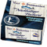
Vier Diamanten
Princes
-
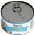
Statesman
Princes
-
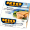
Rio Mare
Bolton
-
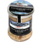
Spar Premium
Spar-Eigenmarke
-
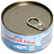
Almare
Hofer-Eigenmarke
-
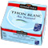
Connetable
Chancerelle
-
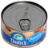
Laguna
REWE-Eigenmarke
-
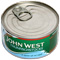
John West
John West Foods
-
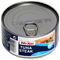
Nixe
Lidl-Eigenmarke
-
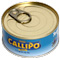
Callipo
Callipo
-
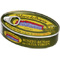
Palacio de Oriente
Palacio de Oriente
-
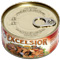
Excelsior
Glatz
-
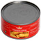
La Perla
RD Tuna Canners Limited